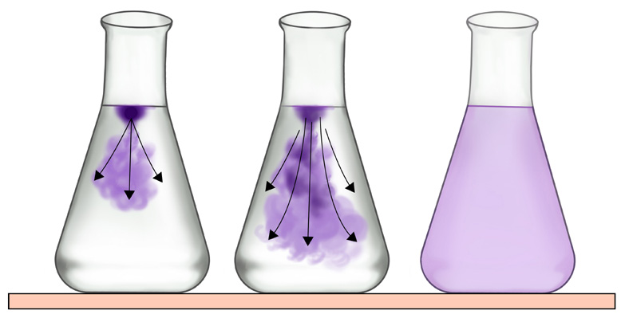

64
Student’s Book - Form Two
Ways of transport of materials
Task 3.2
Search the library and internet sources
for the simulations or videos showing
ways of transporting of materials. Then,
write short notes.
Life processes in organisms take place in the cell. Therefore, it is necessary for materials to move in and out of the cells. Movement of materials is through the cell membrane. There are two ways through which materials can move across the cell membrane, which are active transport and passive transport.
Active transport occurs in the presence of energy in the form of ATP. It enables the movement of materials across the cell membrane. During active transport, substances move against concentration gradient from an area of low concentration to an area of high concentration. An example is the uptake of glucose in the small intestine of a human being when the concentration of glucose in the blood becomes higher than that of the small intestine. Another example is the uptake of mineral salts into root hair cells of plants.
Passive transport occurs spontaneously without the need for energy to transport materials through the cell membrane.
An example is the transport of materials in the cells through diffusion, osmosis,
and mass flow.
Diffusion
This is a passive movement of particles
from an area of high concentration to an area of low concentration, as shown in Figure 3.1. The difference in the concentration of a substance between the two areas is known as a concentration gradient. When the difference in concentration between
the two areas is great, the concentration gradient becomes steep, and the rate of
diffusion increases. As the difference
in concentration between the two areas
decreases, the rate of diffusion slows
down. This process continues until
the substances are distributed evenly
throughout the two areas. When the
particles are evenly distributed, they
move at the same rate in either direction.

Potassium permanganate
direction of diffusion
water
Figure 3.1: Experimental set-up to demonstrate the diffusion process
Roles of diffusion in living things
Diffusion is important in living things.
It helps in the movement of substances in the body, including
(i)
movement of oxygen gas from the
alveoli to the blood capillaries;
08/04/2026 10:18:16